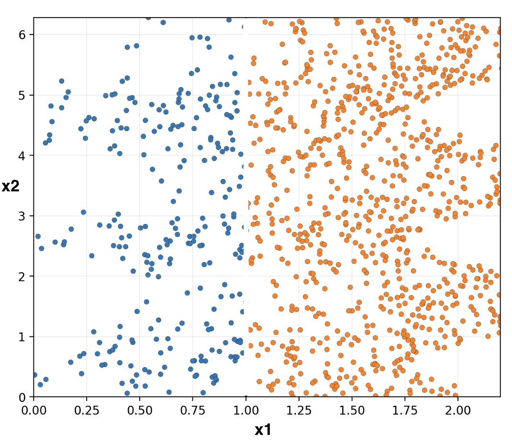
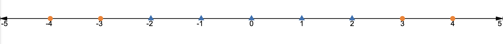

Classification - Questions
- What distinguishes classification from regression?
- Regression predicts continuous value, while classification predicts discrete value
- Regression is a supervised learning problem, while classification is not
- Prediction from classification has to be one of {-1, +1}
- Classification and regression are same

- What is a good decision boundary for the given dataset?
(a) \(x_2 = 1\)
(b) \(x_1 = 1\)
(c) \(x_1 + x_2 = 1\)
(d) \(x_1 = x_2\)
Given the same data points and decision boundary \(x_2 = 3\), how would the point \((1, 1)\) be classified? (a) Blue point (b) Orange point (c) Need more information
What does the learning algorithm need to decide?
- Position of the decision boundary for training data
- Shape of the decision boundary for testing data
- Whether to contort the decision boundary to classify training data better
- Whether to contort the decision boundary to classify testing data
- For the data points \([(1, 1), (2, 1), (0, 1), (-1, -1), (-2, -1)]\), calculate the error of classifier

- Given the above bar graph pairs for \(\varepsilon_{train}\) and \(\varepsilon_{withheld}\), which model should you choose?
(a) a
(b) b
(c) c
- If loss is defined as \(-\varepsilon(h; \mathcal{D}) = - \frac{1}{|\mathcal{D}|} \sum_{(x, y) \in \mathcal{D}} \llbracket h(x) \neq y \rrbracket\), which of the following describes loss for the datapoints \([(1, 1), (2, 1), (-1, -1)]\) and model
?
(a) \(-\frac{1}{3} (\llbracket a < 0 \rrbracket + \llbracket 2a < 0 \rrbracket + \llbracket -a \geq 0 \rrbracket)\)
(b) \(-\frac{1}{3} (\llbracket a \leq 0 \rrbracket + \llbracket 2a \leq 0 \rrbracket + \llbracket -a > 0 \rrbracket)\)
(c) \(\frac{1}{3} (\llbracket a \geq 0 \rrbracket + \llbracket 2a \geq 0 \rrbracket + \llbracket -a < 0 \rrbracket)\)
- Is this loss differentiable?
(a) Yes, it is continuous
(b) No, indicator function \(\llbracket a < 0 \rrbracket\) is not differentiable
- What is relation between a hypothesis class and a model?
- Can find a hypothesis class of size bigger than 1 from a model through training
- Can find a particular model from a hypothesis class through training
- Model is a collection of hypothesis classes
- Hypothesis class is a set of models
- Which of the following are hypothesis classes?
- \(\mathcal{H} = \{ f_{\theta}(x) = \theta x | \theta \in \mathbb{R}^d \}\)
- \(\mathcal{H} = \{ f_{\theta}(x) = 3x^2 + 2x \}\)
- \(\mathcal{H} = \{ h_{\theta}(x) = \begin{cases} \text{1} & \text{if } \theta x \geq 0 \\ \text{-1} & \text{otherwise } \end{cases} | \theta \in \mathbb{R}^d \}\)
- \(\mathcal{H} = \{ h(x) = \begin{cases} \text{1} & \text{if } 2x \geq 0 \\ \text{-1} & \text{otherwise } \end{cases} \}\)
- How does \(\mathcal{H}\) regularize a model?
- If hypothesis class is too flexible, can lead to the model underfitting
- If hypothesis class is too inflexible, can lead to the model overfitting
- If hypothesis class is too flexible, can lead to the model underfitting
- If hypothesis class is too inflexible, can lead to the model overfitting
- For the classifier \(h_{\theta}(x) = sign(ax+b) = \begin{cases} \text{1} & \text{if } ax+b \geq 0 \\ \text{-1} & \text{otherwise } \end{cases}\), what is the decision boundary?
(a) \(ax+b = 1\)
(b) \(ax+b = 0\)
(c) \(ax = -1-b\)
If \(h_{\theta}(x) = sign(x+2)\), how is -1 classified?
If \(h_{\theta}(x) = sign(x+2)\), how is -4 classified?
What is decision boundary for this classifier (\(h_{\theta}(x) = sign(x+2)\))?
(a) \(x+2 = 1\)
(b) \(x+2 = 0\)
(c) \(x = -3\)
If \(h'_{\theta}(x) = sign(2x+4)\), how is -1 classified?
If \(h'_{\theta}(x) = sign(2x+4)\), how is -4 classified?
What is decision boundary for the new classifier (\(h'_{\theta}(x) = sign(2x+4)\))?
(a) \(2x+4 = 1\)
(b) \(2x+4 = 0\)
(c) \(x = -4\)
- Are decision boundaries distinct for classifiers \(h_{\theta}(x)\) and \(h'_{\theta}(x)\)?
(a) Yes
(b) No

- Is the following dataset \([(-4, -1), (-3, -1), (-2, 1), (-1, 1), (0, 1), (1, 1), (2, 1), (3, -1), (4, -1)]\) linearly separable, i.e. can you draw a line such that all orange points are on one side and all blue are on another?
(a) Yes
(b) No
- What shape can help you separate these points?
- two lines
- square around blue points
- no shape can help
Bonus: How can you transform the points to make them linearly separable?
For data point \(\begin{bmatrix} 2 \\ 3 \end{bmatrix}\) with actual label -1 and decision boundary \(f_{\theta}(\begin{bmatrix} x_1 \\ x_2 \end{bmatrix}) = 2x_1 + x_2 = 0\), what is hinge loss for this data point?
For the following data points \([(1, 1), (2, 1), (0, 1), (-1, -1), (-2, -1)]\) and decision boundary \(f_{\theta}(x) = x + 1.5 = 0\), calculate the loss \(\mathcal{L}_l(\theta) = \frac{1}{|\mathcal{D}|} \sum_{(x,y) \in \mathcal{D}} l(y \cdot f_{\theta}(x))\) - where \(l\) is shifted hinge loss.
- How can you update this loss to make the resulting model more confident?
- Use hinge loss
- Add a positive margin so \(l(t) = max(0, 2-t)\)
- Add a negative margin so \(l(t) = max(0, -1-t)\)
- Multiply the loss by 2$
- If loss is defined as \(\mathcal{L}_l(\theta) = \frac{1}{|\mathcal{D}|} \sum_{(x,y) \in \mathcal{D}} l(y \cdot f_{\theta}(x))\) where \(l\) is exponential loss, which of the following describes loss for the datapoints \([(1, 1), (2, 1), (-1, -1)]\) and decision boundary \(f_{\theta}(x) = \theta \cdot x = 0\)
- \(\frac{1}{3} (2*e^{-\theta} + e^{-2\theta})\)
- \(\frac{1}{3} (e^{-\theta} + e^{-2\theta} + e^{-\theta})\)
- \(\frac{1}{3} (3 + 2*e^{-\theta} + e^{-2\theta})\)
- \(\frac{1}{3} (e^{-\theta} + e^{-2\theta} + e^{\theta})\)
- Is this loss differentiable?
(a) Yes, it is continuous
(b) No, exponential loss is not differentiable
Bonus: what is the derivative?
If want to classify between 3 animals, what is the preferred shape for the parametric function \(f_{\theta}\)? (a) \(\mathbb{R}\): one number
(b) \(\mathbb{R}^2\): two numbers
(c) \(\mathbb{R}^3\): three numbersWe are trying to classify an object as cat, dog, lion, bird, or muffin (defined in given order). If the output of the parametric function is \(f_\theta(x) = \begin{bmatrix} 2 \\ 1 \\ 5 \\ 2 \\ 0 \end{bmatrix}\) which class is x predicted to be?
(a) cat
(b) dog
(c) lion
(d) bird
(e) muffin
Calculate softmax(\(\begin{bmatrix} 2 \\ 1 \\ 5 \\ 2 \\ 0 \end{bmatrix}\))?
Which value is biggest in the vector softmax(\(\begin{bmatrix} 2 \\ 1 \\ 5 \\ 2 \\ 0 \end{bmatrix}\))?
Which class will x predicted to be if \(f_\theta(x) = \begin{bmatrix} 2 \\ 1 \\ 5 \\ 2 \\ 0 \end{bmatrix}\) based on softmax(\(\begin{bmatrix} 2 \\ 1 \\ 5 \\ 2 \\ 0 \end{bmatrix}\))?
(a) cat
(b) dog
(c) lion
(d) bird
(e) muffin
What is cross-entropy loss for the following data points \([(\begin{bmatrix} 1 \\ 0 \\ 0 \end{bmatrix}, 1), (\begin{bmatrix} 2 \\ 0 \\ 1 \end{bmatrix}, 1), (\begin{bmatrix} 0 \\ 1 \\ 0 \end{bmatrix}, 2), (\begin{bmatrix} 0 \\ 0 \\ 1 \end{bmatrix}, 3)]\) and \(f_{\theta}(x) = 2x\)?
How can you regularize a classifier?
- Add sparse regularizer to the loss used for training
- Use early stopping during training
- Add weight-decay regularizer to the loss used for testing
- Use more constrained hypothesis class